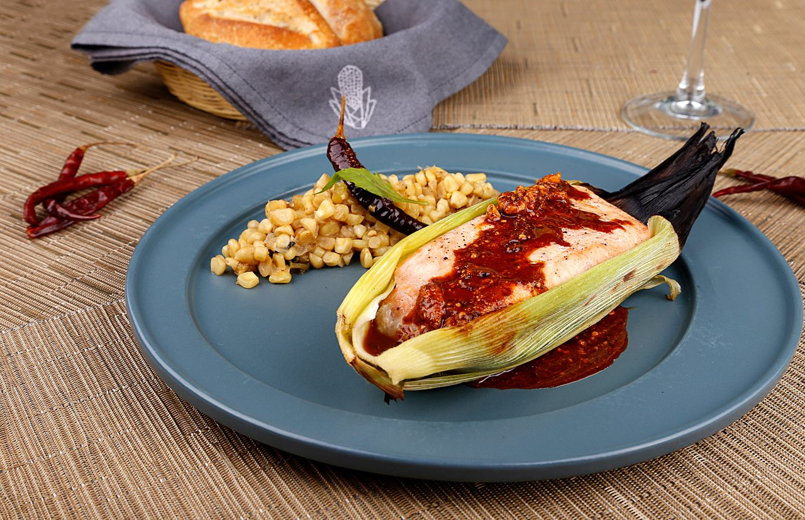

Mextlapique

Descripción
El mextlapique forma parte de la de clasificación de "tamales tradicionales", cuya característica es la de no utilizar masa y su relleno está conformado
por pescado, atepocates, ranas o ajolotes cocidos al vapor o tatemados en comal.
Esta receta la realizaba la madre de mi abuela, quien era de origen otomí; la salsa se elaboraba en época de haba verde, como acompañamiento para tacos
u otros guisos, pero mi abuela realizaba estos tamalitos con la rana en estas épocas, acomo los tallos de flores de calabaza que por sí solos son
increíbles, el sabor de los tlalitos u asiento en otras regiones es singular.
Desconozco el origen neto de la receta pero es un aporte de mis antepasados que fueron indígenas del Estado de México. Hoy en día en la ciudad no se acostumbra
mucho el consumo de estos productos, pero en mi casa lo elaboran las personas del trabajo doméstico y su procedencia es por lo regular de San Pablo Autopan,
San Cristóbal Huichochitlan, Temoaya y Tlachaloya, todos de orgen otomí.
Cuando cada una de estas personas prepara el platillo le pone su toque personal, de acuerdo con sus costumbres.
Ingredientes
- 500 gr. de haba verde en vaina
- 1/2 cebolla
- 2 dientes de ajo
- 1/2 kg. de tomate o miltomate
- 2 ranas medianas
- 1 manojo de totomoxtle
- 1 manojito de cilantro
- 100 gr. de chiles verdes
- Manteca la necesaria
- 1 manojito de los tallos de las flores de calabaza
- 3 cucharadas de tlalitos
- Venas de chiles con semilla
- Sal
Preparación
- Se limpian las ranas, se sofríen en manteca con un poco de sal, reservar
- Las hojas de maíz se remojan en agua tibia hasta reblandecer
- Se tuestan en el comal las habas con todo y vaina, los chiles serranos, el tomate, la cebolla y el ajo, ya tostadas las habas se sacan de la
vaina y se muele todo en el molcajete junto con el cilantro hasta obtener una salsa, rectificar, sazón
- Se toman tres hojas de maíz y se acomodan de manera que puedan contener a la rana, se baña con la salsa y se envuelve en forma de tamal, se pone
a cocer en el comal volteándolo constantemente
- Conforme se van quemando las hojas exteriores, se van eliminando por otras nuevas, se retira del comal. Hasta que se cueza bien
- Las flores de calabaza se fríen con los tlalitos o en su defecto con la pura manteca, se le puede añadir ajo y cebolla picados y unas venas de chiles,
se dejan sudar, se sazonan y se sirven junto con el mextlapique